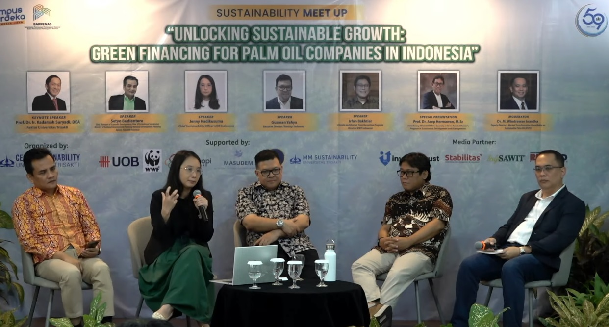
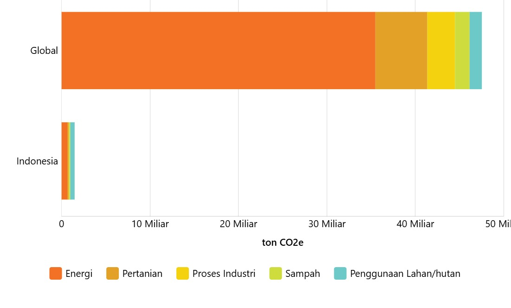

Tentang SDGs
Tahukah kamu? Pada 5 Februari 2024, banjir besar melanda beberapa wilayah di provinsi Jawa Tengah. Menurut data dari Badan Penanggulangan Bencana Daerah, banjir ini merendam kurang lebih 32 desa di 12 kecamatan di Kabupaten Grobogan. Ini bukan sekadar bencana alam, tetapi juga pengingat akan permasalahan perubahan iklim yang dihadapi Indonesia. Berdasarkan data hasil analisis tim peneliti Badan Riset dan Inovasi Nasional (BRIN), telah terjadi perubahan klimatologis di Indonesia dalam jangka waktu 19 tahun, yaitu sejak 2001 hingga 2019. Perubahan ini terlihat dari meningkatnya suhu rata-rata tahunan, pergeseran pola curah hujan, serta frekuensi bencana alam seperti banjir dan kekeringan yang semakin sering. Kondisi-kondisi seperti ini menunjukkan betapa pentingnya peran Indonesia dalam mengimplementasikan Tujuan Pembangunan Berkelanjutan (SDGs), khususnya SDG 13: Climate Action, yang bertujuan untuk mengambil langkah-langkah mendesak dalam mengatasi perubahan iklim dan dampaknya. Untuk mengatasi perubahan iklim, diperlukan adaptasi, peningkatan kompetensi, dan kerja sama antar pemangku kepentingan. SDGs 13 mendorong negara, perusahaan, dan masyarakat untuk mengambil langkah nyata dalam mengurangi dampaknya. Pendidikan yang berkualitas dan inovasi berkelanjutan menjadi kunci utama dalam menghadapi tantangan lingkungan ini. Berbagai indikator juga telah dirancang untuk memantau sejauh mana keberhasilan Indonesia dalam mencapai tujuan ini
Indikator Pencapaian SDG 13
Pengurangan Risiko Bencana
- 13.1.1: Jumlah korban meninggal, hilang, atau terdampak langsung oleh bencana per 100.000 orang.
- 13.1.2: Implementasi strategi nasional penanggulangan bencana sesuai dengan Sendai Framework for Disaster Risk Reduction 2015.
- 13.1.3: Persentase pemerintah daerah yang mengadopsi strategi penanggulangan bencana sesuai rencana nasional.
Pengelolaan Gas Rumah Kaca (GRK)
- 13.2.1: Pelaksanaan inventarisasi GRK, termasuk pelaporan dan verifikasi emisi dalam dokumen resmi.
- 13.2.2: Jumlah emisi GRK per tahun.
- 13.2.2.(a): Potensi penurunan emisi GRK.
- 13.2.2.(b): Potensi penurunan intensitas emisi GRK.
Kesadaran Lingkungan Hidup
- 13.3.1.(a): Jumlah satuan pendidikan dan komunitas masyarakat yang berbudaya lingkungan hidup.
Pendanaan Perubahan Iklim
- 13.a.1.(a): Jumlah dana publik (budget tagging) untuk pendanaan terkait perubahan iklim.
Tentang Kerjasama
Pada 31 Agustus 2024, Indonesia kembali menegaskan komitmennya dalam memperkuat kerja sama internasional, sebuah langkah signifikan dalam mencapai tujuan global tersebut. "Selama periode 2021-2022, Indonesia telah melaksanakan berbagai kegiatan seperti pelatihan, workshop, seminar, dan berbagi pengetahuan dengan negara-negara di Afrika, Asia Tenggara, dan Pasifik Selatan. Kegiatan ini tidak hanya mempererat hubungan ekonomi tetapi juga berbagi pengalaman dalam perencanaan dan pembangunan," jelas Deputi Amalia dari Bidang Ekonomi di Bappenas. Pernyataan tersebut menunjukkan bahwa Indonesia tidak hanya menjalin kerjasama internasional dalam bidang ekonomi, tetapi juga mencakup bidang-bidang pembangunan, pendidikan, kesehatan, dll. Untuk lebih mendalami peran Indonesia dalam kerjasama internasional, penting untuk mengetahui perbedaan antara kerjasama bilateral, regional, dan multilateral. Setiap jenis kerjasama ini memiliki karakteristik yang berbeda, namun semuanya berkontribusi pada pencapaian Tujuan Pembangunan Berkelanjutan (SDGs). Berikut adalah penjelasan lebih lanjut mengenai perbedaan ketiga jenis kerjasama tersebut beserta contoh konkretnya
Kerjasama Bilateral
Kerja sama bilateral melibatkan dua negara yang menjalin hubungan untuk bekerja sama di berbagai bidang. Biasanya, kerja sama semacam ini dilakukan oleh negara-negara dengan hubungan diplomatik yang baik. Salah satu contoh konkretnya adalah kolaborasi antara Indonesia dan Norwegia. “Hubungan kita dengan Norwegia sudah 74 tahun dan sejumlah hal kemitraan strategis antara Indonesia dengan Norwegia, terutama dalam hal green economy, lingkungan hidup, pembangunan berkelanjutan itu menjadi konsen kedua belah pihak,” papar Ledia di Nusantara III. Sederhananya, sejarah persahabatan dan kerjasama kedua negara ini berfokus pada isu lingkungan dan pengelolaan hutan. Dalam kemitraan ini, Norwegia memberikan dukungan kepada Indonesia melalui program REDD+ (Reducing Emissions from Deforestation and Forest Degradation) untuk mengurangi emisi gas rumah kaca. Inisiatif ini tidak hanya bermanfaat mencapai target iklim, tetapi juga mendukung pembangunan berkelanjutan, misalnya melalui pemberdayaan masyarakat di sekitar hutan.
Kerjasama Regional
Kerja sama regional melibatkan kolaborasi antarnegara yang berada dalam satu kawasan atau wilayah tertentu untuk menghadapi tantangan bersama atau mencapai tujuan tertentu. Bentuk kerja sama ini sering didasarkan pada kesamaan geografis, budaya, atau kepentingan ekonomi, yang memungkinkan negara-negara di kawasan tersebut bekerja lebih efektif dalam menangani isu-isu lintas batas. Salah satu contoh konkret kerja sama regional adalah partisipasi Indonesia dalam kolaborasi ASEAN untuk mitigasi bencana dan pengurangan dampak perubahan iklim. Melalui ASEAN Agreement on Disaster Management and Emergency Response (AADMER), negara-negara anggota, termasuk Indonesia, bekerja sama dalam membangun ketahanan kawasan terhadap bencana alam. Selain itu, ASEAN juga mendorong penerapan ASEAN Climate Change Initiative (ACCI), yang bertujuan untuk mengurangi emisi karbon dan meningkatkan upaya adaptasi terhadap perubahan iklim.
Kerjasama Multilateral
Kerja sama multilateral melibatkan lebih dari dua negara dan seringkali dilakukan melalui organisasi internasional untuk mengatasi isu-isu global bersama seperti perubahan iklim dan terorisme. Salah satu contoh konkret kerja sama multilateral Indonesia dalam menangani perubahan iklim adalah partisipasinya dalam Perjanjian Paris. Pada 23 April 2016, Menteri Lingkungan Hidup dan Kehutanan Dr. Siti Nurbaya, mewakili Presiden Joko Widodo, menandatangani perjanjian tersebut dalam Konferensi Perubahan Iklim (COP 21). Berdasarkan data UNFCCC, emisi gas rumah kaca (GRK) Indonesia sebesar 0,554 Gt CO2eq, atau 1,49% dari total emisi global. Hal ini menempatkan Indonesia sebagai salah satu negara yang bertanggung jawab atas permasalahan ini. Untuk itu, Indonesia telah berkomitmen menurunkan emisi 29% pada 2030 dengan potensi peningkatan hingga 41% melalui kerja sama internasional yang memperkuat langkah nasional dalam menghadapi perubahan iklim (BPHN).
Hubungan Sebab Akibat
Sustainable Development Goals (SDGs) mendorong kerja sama global untuk mencapai target pembangunan berkelanjutan. SDGs merupakan agenda global yang disepakati oleh negara-negara anggota PBB pada tahun 2015 dan Indonesia resmi menjadi anggota PBB pada tahun 1950, maka Indonesia secara otomatis terlibat dalam SDGs. "Di tingkat dunia, pencapaian SDGs ini suram, sementara Indonesia merupakan negara dengan pencapaian tertinggi di antara negara-negara berpenghasilan menengah atas," kata Manajer Pilar BAPPENAS/Kementerian PPN Setyo Budiantoro. Kutipan ini mencerminkan peran krusial Indonesia dalam mencapai Tujuan Pembangunan Berkelanjutan SDGs, meskipun di tingkat global, pencapaian SDGs secara keseluruhan masih jauh dari target yang diinginkan. Indonesia, sebagai negara dengan pendapatan menengah atas, menunjukkan kemajuan signifikan dalam pencapaian SDGs, bahkan dibandingkan dengan banyak negara berpenghasilan sejenis. Berdasarkan data dari APBN, Indonesia telah mencapai 62,5% target SDGs 2030, yang merupakan yang tertinggi di Asia.  Tidak hanya Indonesia, tetapi SDGs menjadi kerangka acuan global yang mendorong negara-negara untuk bekerja sama karena banyak dari negara yang terlibat dalam SDGs sedang menghadapi tantangan-tantangan yang sama, seperti perubahan iklim. Seperti yang sudah dijelaskan sebelumnya, salah satu contohnya adalah SDG 13: Climate Action yang memotivasi negara-negara untuk bergabung dalam Perjanjian Paris guna mengurangi emisi karbon secara kolektif. Sebelumnya hanya dijelaskan tentang kontribusi Indonesia, namun sebenarnya banyak negara lain yang berpengaruh terhadap Perjanjian Paris. Setiap negara yang meratifikasi Perjanjian Paris membuat komitmen yang disebut Nationally Determined Contribution (NDC). NDC merupakan komitmen untuk mengurangi emisi gas rumah kaca dan mencapai tujuan iklim global.
Kesimpulan dan Saran
Berdasarkan analisis yang dilakukan, dapat disimpulkan bahwa kerjasama internasional, baik bilateral, regional, maupun multilateral, memiliki peran yang sangat penting dalam pencapaian Tujuan Pembangunan Berkelanjutan (SDGs). Indonesia, melalui komitmennya dalam berbagai kerjasama internasional seperti Paris Agreement dan Green Climate Fund, menunjukkan upaya nyata untuk mengurangi dampak perubahan iklim dan mendukung pencapaian SDG 13. Namun, meskipun ada kemajuan signifikan, pencapaian SDGs secara global masih menghadapi tantangan besar yang menuntut kerjasama yang lebih luas dan lebih mendalam antar negara.
Salah satu target yang ingin dicapai dalam SDG 13: Climate Action adalah menurunkan emisi gas rumah kaca. Secara keseluruhan, Indonesia perlu meningkatkan upaya untuk pencapaian SDG ini karena data dari Climate Watch menunjukkan bahwa pada 2020, Indonesia menghasilkan emisi gas rumah kaca sekitar 1,48 miliar ton/gigaton ekuivalen karbon dioksida (Gt CO2e). Walaupun pada tahun 2023, Indonesia berhasil menurunkan emisi gas rumah kaca sektor energi sebesar 127,67 juta ton CO2e yang melebihi target 109,64%, Indonesia masih merupakan penyumbang emisi gas rumah kaca terbesar ke-6 di dunia, setelah Tiongkok, Amerika Serikat, India, Uni Eropa, dan Rusia (PPID). Beberapa penyebab utama emisi gas rumah kaca adalah perilaku manusia yang konsumtif, penumpukan sampah yang berlebihan, penebangan hutan besar-besaran, penggunaan bahan bakar fosil, dan pemakaian pupuk kimia yang tinggi. Seluruh rakyat Indonesia dapat membantu mengurangi efek rumah kaca yang terjadi dengan cara terlibat aktif dalam melakukan solusi-solusi sederhana yang berdampak besar. Contohnya, menghemat penggunaan energi listrik dengan cara matikan lampu dan peralatan listrik yang tidak digunakan, mengurangi penggunaan kendaraan pribadi dengan beralih ke transportasi umum, dan memilih produk-produk yang ramah lingkungan. Selain itu, masyarakat juga bisa mendukung program reboisasi, menggunakan energi terbarukan, serta mengelola limbah rumah tangga secara bijak untuk mengurangi emisi karbon. Kesadaran dan tindakan dari setiap individu akan menjadi kontribusi signifikan dalam mendukung upaya Indonesia mencapai target pengurangan emisi sebesar 29% pada 2030, seperti yang tercantum dalam komitmen Persetujuan Paris.